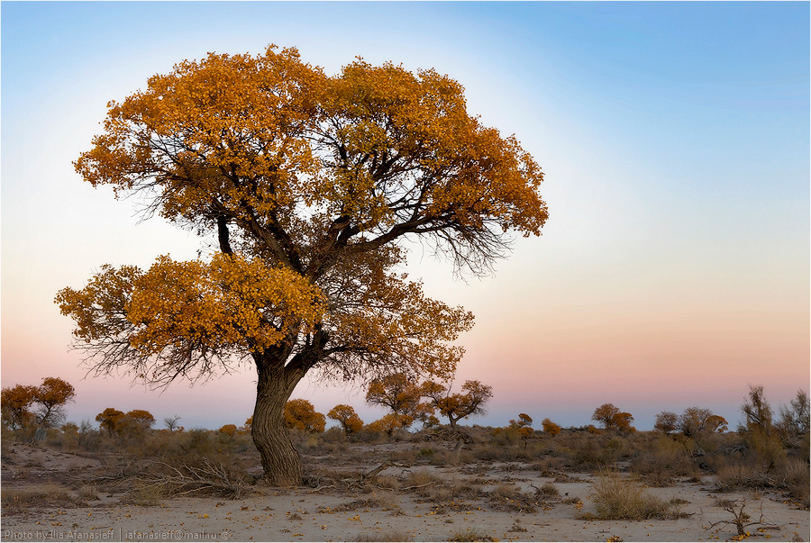
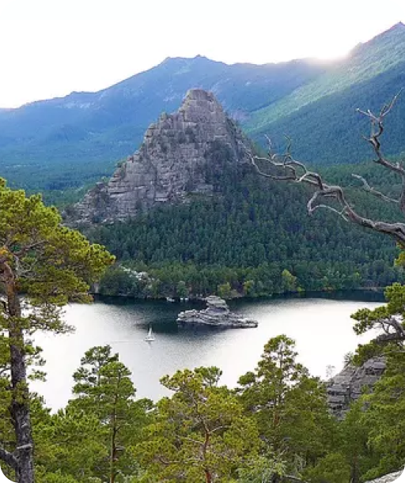

Азиатский тополь уникален тем, что приспособлен к песчаным и солончаковым почвам. Его мощная корневая система проникает в почву на глубину до 50 метров. Летом в этой местности практически все растения увядают, но не туранговая роща. Азиатский тополь может питаться грунтовыми водами под залежами песка, это позволяет ему выжить в крайне суровых климатических условиях Северного Прибалхашья.
.png)
Поющей горой или барханом называется огромный песчаный холм, который имеет длину более трех километров и около двухсот метров в высоту. Этот бархан вырос на речном берегу реки .

Озеро Каинды – одно из самых красивых мест Казахстана. Расположено оно в ущелье Кенгей-Алатау и образовалось в 1910 году в результате землетрясения. Оползни перекрыли горное ущелье, которое наполнилось родниковой водой, утопившей живой хвойный лес. Высокие деревья не полностью были покрыты водой – их верхушки торчали над озером, получив от местных жителей название Стражи.
Где самая красивая природа в Казахстане? Богатой и разнообразной природой славятся национальные природные парки Катон-Карагай и курортная зона Бурбай, загадочное озеро Шайтанколь. На севере Акмолинской области находится национальный природный парк Бурабай, занимающий 25 га. Живописное озеро в этом парке стало центром курорта, который называют казахстанской Швейцарией. Санатории и пансионаты окутаны смолистым ароматом прибрежных лесов и славятся лечебными грязями. Главная достопримечательность этих мест — остров Жумбактас на озере. Это 20-метровая скала-загадка, которая с разных сторон напоминает то сфинкса, то старуху, то девушку.


В Казахстане созданы особо охраняемые законом заповедники, парки, заказниэки. Самый большой национальный природный парк — Катон-Карагай в Восточно-Казахстанской области, раскинувшийся более чем на 6 тыс. км². Природа этого заповедника отличается богатством. Треть парка занимают леса. Здесь есть горные вершины, бурные реки, скалистые образования, чистые родники. На его территории встречаются исторические курганы, петроглифы. Некоторые места парка вошли в государственный проект «Сакральная география Казахстана».
Протянувшийся на 154 км каньон вдоль реки Чарын в Казахстане.
Каньон располагается в 195 км восточнее города Алматы. Он расположен на территории трёх районов Алматинской области: Уйгурского, Райымбекского, Енбекшиказахского.
Чарынский каньон — памятник природы, сложенный из осадочных пород, возраст которых составляет около 12 миллионов лет. Высота отвесных гор каньона достигает 150–300 м.
Каньон входит в территорию Чарынского национального парка, образованного 23 февраля 2004 года.
.png)